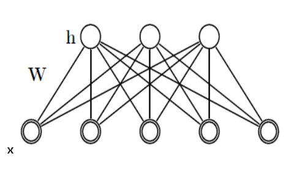
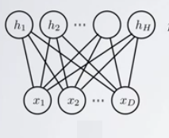

RBM aynen Boltzman Makinalarında (BM) örneğinde olduğu gibi bir dağılımdır. Verilen \(x,h\) için bir olasılık değeri geri döndürebilir. \[ p(x,h;W) = \exp (-E(x,h)) / Z \]
Standart RBM için \(h,x\) ikiseldir (binary). Gizli (hidden) tabaka \(h\), ve "görünen (visible)'' tabaka \(x\) vardır. \(Z\) aynen önce gördüğümüz BM'de olduğu gibi normalizasyon sabitidir. Spesifik bir RBM'i tanımlayan şey onun \(W\) matrisidir. Gizli değişkenler bazen karışıklık yaratabiliyor, bu değişkenler aynen görünen değişkenler gibi değişkendirler. Yani belli \(h\)'lerin "olasılığı'' sorulabilir, ya da onlar üretilebilir. Fakat RBM'i eğitirken sadece görünen kısmı tarafından eğitiriz. Gizli tabaka bu sırada örneklem ile arada sırada içi doldurulur, bu tabii ki \(W\)'ye bağlı olarak yapılacaktır. Gizli tabaka daha düşük boyutlu olduğu, ve 0/1 değerlerine sahip olması mecbur olduğu için bu git/gel bir tür özetleme yapar ki öğrenim bu sırada ortaya çıkar.
Devam edelim, \(E\) tanımına "enerji'' olarak ta atıf yapılabiliyor.
\[ E(x,h) = -h^TWx - c^Tx - b^Th \]
BM'lerden farklı olarak RBM'de \(c,b\) değişkenleri var. Bu değişkenler yanlılık (bias) için, yani veri içindeki genel eğilimi saptamaları için modele konulmuştur. Ayrıca \(h^TWx\) terimi var, bu BM'deki \(x^TWx\)'den biraz farklı, daha önce belirttiğimiz gibi, \(h\) üzerinden \(x\)'ler arasında bağlantı yapıyor. BM ile tüm \(x\) öğeleri birbirine bağlanabiliyordu, RBM ile \(h\) katmanında bağlantılar paylaşılıyor. Bu \(h\) üzerinden bağlantı zorunluluğu RBM'in özetleme alanını azaltarak genelleme oluşturmasını sağlıyor. Bu yüzden onlara "kısıtlı'' Boltzmann makinaları adı veriliyor. Gizli değişkenlerin kendi aralarında, ve görünen değişkenlerin kendi aralarında direk bağlantıya izin verilmemiştir, ki bu daha önce bahsedilen kısıtlamanın bir diğer yönü. Bağlantılara, \(W\) üzerinden sadece gizli ve görünen değişkenler (tabakalar) arasında izin verilmiştir. Bu ayrıca matematiksel olarak bazı kolaylıklar sağlıyor, bu konuyu birazdan işleyeceğiz.
Formül alttaki gibi de açılabilir,
\[ = - \sum_j \sum_k W_{j,k}h_jx_k - \sum_k c_kx_k - \sum_j b_jh_j \]
 
Tekrar vurgulayalım, \(h,x\) değişkenleri olasılık teorisinden bilinen rasgele değişkenlerdir, yani hem \(x\)'e hem de \(h\)'e "zar attırabiliriz'' / bu değişkenler üzerinden örneklem toplayabiliriz.
Ayrıca, RBM'ler aynen BM'ler gibi bir olasılık yoğunluk fonksiyonu üzerinden tanımlanırlar, önceki formülde gördüğümüz gibi, tüm mümkün değerleri üzerinden entegralleri (ya da toplamları) alınınca sonuç 1 olur, vs.
Devam edelim, ana formülden hareketle cebirsel olarak şunlar da doğrudur,
\[ p(x,h;W) = \exp (-E(x,h)) / Z \]
\[ \qquad (2) = \exp (h^TWx + c^Tx + b^Th ) / Z \]
\[ = \exp (h^TWx) \exp (c^Tx) \exp(b^Th) / Z \]
çünkü bir toplam üzerindeki \(\exp\), ayrı ayrı \(\exp\)'lerin çarpımı olur. Aynı mantıkla, eğer ana formülü matris / vektör yerine ayrı değişkenler olarak görmek istersek,
\[ p(x,h;W) = \frac{1}{Z} \prod_j \prod_k \exp (W_{jk}h_jx_k) \prod_k \exp(c_kx_k) \prod_j \exp(b_jh_j) \]
Notasyonu kolaylaştırmak amacıyla \(b,c\) terimlerini \(W\) içine absorbe edebiliriz, \(x_0=1\) ve \(h_0=1\) değerlerini mecbur tutarsak ve \(w_{0,:}=c\) ve \(w_{:,0}=b\) dersek, yani \(W\)'nin sıfırıncı satırının tamamının \(c\) olduğunu, sıfırıncı kolonunun tamamının \(b\) olduğunu kabul edersek RBM ana formülünü tekrar elde etmiş oluruz, fakat artık
\[ E(x,h) = -h^TWx \]
\[ = - \sum_j \sum_k W_{j,k}h_jx_k \]
ve
\[ p(x,h;W) = \exp (h^TWx) / Z \]
yeterli olacaktır. Bir diğer kolaylık \(x,h\) yerine tek değişken kullanmak,
Eğer \(y \equiv (x,h)\) olarak alırsak (\(\equiv\) tabiri "tanım'' anlamına gelir),
\[ P(x,h;W) = \frac{1}{Z(W)} \exp \bigg[ \frac{1}{2} y^T W y \bigg] \]
Aslında açık konuşmak gerekirse "enerji'' gibi kavramlarla uğraşmak, ya da içinde eksi terimler içeren bir grup değişkenin tekrar eksisini almak ve eksilerin etkisini nötralize etmiş olmaya gerek yok, bunun yerine baştan (2)'deki ifadeyle yola çıkmak daha kısa olur. İçinde enerji olan açıklamaları biraz da literatürde görülebilecek anlatımlara açıklık getirmek için yaptık.
Şimdi \(h\) üzerinden marjinalize edersek,
\[ P(x;W) = \sum_h \frac{1}{Z(W)} \exp \bigg[ \frac{1}{2} y^T W y \bigg] \]
\[ \qquad (1) P(x;W) = \frac{1}{Z(W)} \sum_h \exp \bigg[ \frac{1}{2} y^T W y \bigg] \]
Ve \(Z(W)\)
\[ Z(W) = \sum_{h,x} \exp \bigg[ \frac{1}{2} y^T W y \bigg] \]
\[ P(x;W) = \frac{1}{Z(W)} \underbrace{ \sum_h \exp \bigg[ \frac{1}{2} y^T W y \bigg] }_{Z_x(W)} \]
O zaman
\[ P(x;W) = \frac{Z_x(W)}{Z(W)} \]
elde ederiz. Veri üzerinden maksimum olurluk için, yine log üzerinden bir hesap yaparız, BM için yapmıştık bunu,
\[ \mathcal{L} = \ln \big( \prod_{n=1}^{N} P(x^{n};W) \big) = \sum_{n=1}^{N} \ln P(x^{n};W) \]
\[ = \sum_{n=1}^{N} \ln \frac{Z_{x^{(n)}}(W)}{Z(W)} = \sum_{n=1}^{N} \big(\ln Z_{x^{(n)}} - \ln Z \big) \]
\[ \frac{\partial \mathcal{L} }{\partial w_{ij}} = \sum_{n=1}^{N} \big( \frac{\partial \ln Z_{x^{(n)}} }{\partial w_{ij}} - \frac{\partial \ln Z }{\partial w_{ij}} \big) \qquad (3) \]
Parantez içindeki 1. türevi alalım,
\[ \frac{\partial \ln Z_{x^{(n)}} }{\partial w_{ij}} = \frac{\partial }{\partial w_{ij}} \ln \bigg[ \sum_h \exp \big( \frac{1}{2} y^{n^T} W y^n \big) \bigg] \]
\[ = \frac{1}{Z_{x^{(n)}}} \bigg[ \sum_h \frac{\partial }{\partial w_{ij}} \exp \big( \frac{1}{2} y^{n^T} W y^n \big) \bigg] \]
\[ = \frac{1}{Z_{x^{(n)}}} \bigg[ \sum_h \exp \big( \frac{1}{2} y^{n^T} W y^n \big) \frac{\partial }{\partial w_{ij}} y^{n^T} W y^n \bigg] \]
\[ = \frac{1}{Z_{x^{(n)}}} \sum_h \exp \big( \frac{1}{2} y^{n^T} W y^n \big) y_iy_j \]
\[ = \sum_h \frac{1}{Z_{x^{(n)}}} \exp \big( \frac{1}{2} y^{n^T} W y^n \big) y_iy_j \]
\(Z_{x^{(n)}}\)'nin ne olduğunu hatırlarsak, \(\exp\) ifadesinin \(h\) üzerinden marjinalize edilmiş hali,
\[ = \sum_h \frac{\exp \big( \frac{1}{2} y^{n^T} W y^n \big)} {\sum_h \exp \big( \frac{1}{2} y^T W y \big) } y_iy_j \]
Eğer bölümün üstünü ve altını \(Z\) ile bolşek,
\[ = \sum_h \frac{\exp \big( \frac{1}{2} y^{n^T} W y^n \big) / Z} {\sum_h \exp \big( \frac{1}{2} y^T W y \big) / Z} y_iy_j \]
Üst kısım \(P(y;W)\) yani $P(x,h;W) $ alt kısım \(P(x;W)\) olmaz mı? Evet! Ve,
\[ P(h|x^n;W) = \frac{P(x^n,h;W)}{P(x^n;W)} \]
olduğuna göre,
\[ = \sum_h P(h|x^n;W) y_iy_j \]
elde ederiz. Bunu da \(<y_iy_j>_{P(h|x^n;W)}\) olarak yazabiliriz.
Şimdi parantez içindeki 2. türevi alalım, yani \(\frac{\partial \ln Z }{\partial w_{ij}}\),
\[ \frac{\partial \ln Z }{\partial w_{ij}} = \sum_{h,x} \frac{1}{Z} \exp \big( \frac{1}{2} y^{T} W y \big) y_iy_j = \sum_{h,x} P(y;W) y_iy_j \]
ki bu son ifadeyi de \(< y_iy_j >_{P(y;W)}\) olarak yazabiliriz. Tamamını, yani (3) ifadesini, artık şöyle yazabiliriz,
\[ \sum_{n=1}^{N} \big( \frac{\partial \ln Z_{x^{(n)}} }{\partial w_{ij}} - \frac{\partial \ln Z }{\partial w_{ij}} \big) = \sum_{n=1}^{N} < y_iy_j >_{P(h|x^n;W)} - < y_iy_j >_{P(y;W)} \qquad (4) \]
Bu formülü de BM için yaptığımız gibi bir gradyan güncelleme formülüne dönüştürebiliriz. Güncelleme formülünün hangi hesapları gerektirdiğine gelince; İlk terim tüm \(h\)'ler üzerinden ki hesabı basit, ikincisi ise tüm mümkün \(x,h\)'ler üzerinden bir olasılık hesabı ve örnekleme gerektirecek. Bu durum çetin hesap (intractable) denen bir durum, özellikle \(x,h\) şartı için; daha önce BM için bu problemi Gibbs örneklemesi ile çözmüştük. Aynı çözümü burada da uygulayabiliriz, fakat belki daha iyi bir yaklaşım şu olacak.
CD Yöntemi (Contrastive Divergence)
RBM'leri eğitmek için kullanılan en popüler yöntem CD yöntemidir. Bu tekniği anlatmadan önce bazı matematiksel kolaylıkları bilmek gerekli.
RBM grafiğine bakarsak, eğer \(x\) biliniyor ise bu \(h\) değişkenlerini bağımsız hale getirir (koşullu olasılık kuralı), ve aynı şekilde \(h\) biliniyor ise \(x\) bağımsız hale gelir. Bunu görsel olarak bile anlamak çok kolay, elimizle tüm \(x\)'leri kapatalım mesela ve \(h\) düğümlerine bakalım, aralarında hiçbir bağlantı yoktur değil mi? Aynı şekilde \(h\) kapatınca \(x\)'ler "bağlantısız'' hale gelir.
Bu bağımsızlıktan yola çıkarak, daha önce BM için yaptığımız gibi, olasılıklar şu basit formüllere dönüşür,
\[ P(h_i=1|x) = \sigma \bigg( \sum_{j=1}^{m} w_{ij} x_j \bigg) \]
\[ P(x_i=1|h) = \sigma \bigg( \sum_{i=1}^{n} w_{ij} h_i \bigg) \]
ve tabii ki \(\sigma(x) = 1 / (1+e^{-x})\). Daha önce 1 olma olasılığını nasıl örnekleme çevireceğimizi de görmüştük zaten.
Şimdi CD'nin ne olduğuna gelelim. Eğer RBM için gereken örneklemeyi klasik Gibbs ile yaparsak örnekleme zincirini "yeterince uzun süre'' işletmek gerekir ki dağılımın olası noktaları gezilmiş olsun. Fakat, özellikle yüksek boyutlu durumlarda, tüm \(x,h\) kombinasyonlarını düşünürsek bu çok büyük bir alandır ve gezme işlemi çok, çok uzun zaman alabilir. Bunun yerine, ve üstteki bağımsızlık formüllerinden hareketle CD yöntemi bulunmuştur, bu yönteme göre örnekleme verinin kendisinden başlatılır (kıyasla pür Gibbs rasgele bir noktadan), döngünün mesela ilk adımında \(x^0\) (ki bu tüm verinin tamamı), baz alınarak \(p(h^0|v^0)\) hesaplanır (üstteki sigmoid), onun üzerinden \(h^0\) örneklemi alınır, sonra \(h^0\) baz alınır ve \(x^1\) üretilir, bu böyle devam eder. Böylece mümkün \(h\) ve \(x\)'ler gezilmiş olur. Not: Sürekli verinin kendisine dönmenin de bazı dezavantajları var, ki bunu yapmadan pür Gibbs örneklemesine daha yakın bir yaklaşım Kalıcı (Persistent) CD adlı yöntemdir (tabii başka yaklaşıksal numaralar kullanarak).
Literatürde şu şekildeki resim bolca görülebilir,
Bu yöntem pür Gibbs örneklemesine kıyasla çok daha hızlı işler ve iyi sonuçlar verir. Teorik olarak niye işlediği [1,2,4] makalelerinde bulunabilir. CD aslında (4) hedef formülünü değil başka bir hedefi optimize ediyor, fakat sonuç orijinal gradyan adımlarının yapmak istediğine yakın. [3] baz alınarak, şu şekilde kodlanabilir,
import numpy as np
import itertools
class RBM:
def __init__(self, num_hidden, learning_rate,max_epochs, num_visible=10):
self.num_hidden = num_hidden
self.num_visible = num_visible
self.learning_rate = learning_rate
# Agirlik matrisi W'yi yarat (buyukluk num_visible x num_hidden),
# bunun icin Gaussian dagilimi kullan, ortalama=0, standart sapma 1.
self.weights = 0.1 * np.random.randn(self.num_visible, self.num_hidden)
# Egilim (bias) icin ilk satir ve ilk kolona 1 degeri koy
self.weights = np.insert(self.weights, 0, 0, axis = 0)
self.weights = np.insert(self.weights, 0, 0, axis = 1)
self.max_epochs = max_epochs
def fit(self, data):
"""
Makinayi egit
Parametreler
----------
data: Her satirin "gorunen" veri oldugu bir matris
"""
num_examples = data.shape[0]
# Ilk kolona egilim / meyil (bias) olarak 1 ekle
data = np.insert(data, 0, 1, axis = 1)
for epoch in range(self.max_epochs):
# Veriyi baz alarak gizli veriyi uret.
pos_hidden_activations = np.dot(data, self.weights)
pos_hidden_probs = self._logistic(pos_hidden_activations)
pos_hidden_states = pos_hidden_probs > \
np.random.rand(num_examples, self.num_hidden + 1)
tmp = np.array(pos_hidden_states).astype(float)
pos_visible_states = self.run_hidden(tmp[:,1:])
# Dikkat, baglantilari hesaplarken h tabakasinin aktivasyon
# olasiliklarini kullaniyoruz h'nin kendi degerlerini (0/1)
# kullanmiyoruz. Bunu da yapabilirdik, daha fazla detay icin
# Hinton'un "A Practical Guide to Training Restricted Boltzmann
# Machines" makalesine bakilabilir
pos_associations = np.dot(data.T, pos_hidden_probs)
# Simdi gorunen veriyi gizli veriyi baz alip tekrar uret
neg_visible_activations = np.dot(pos_hidden_states, self.weights.T)
neg_visible_probs = self._logistic(neg_visible_activations)
neg_visible_probs[:,0] = 1 # Fix the bias unit.
neg_hidden_activations = np.dot(neg_visible_probs, self.weights)
neg_hidden_probs = self._logistic(neg_hidden_activations)
# Yine ayni durum, aktivasyon olasiliklari kullaniliyor
neg_associations = np.dot(neg_visible_probs.T, neg_hidden_probs)
# Agirliklari guncelle
self.weights += self.learning_rate * \
((pos_associations - neg_associations) / num_examples)
error = np.sum((data - neg_visible_probs) ** 2)
def run_visible(self, data):
"""
RBM'in egitilmis olduguna farz ederek, gorunen veri uzerinde
RBM'i islet, ve h icin bir orneklem al
Parametreler
----------
data: Her satirin gorunen veri oldugu bir matris
Returns
-------
hidden_states: data icindeki her satira tekabul eden gizli h verisi
"""
num_examples = data.shape[0]
hidden_states = np.ones((num_examples, self.num_hidden + 1))
data = np.insert(data, 0, 1, axis = 1)
hidden_activations = np.dot(data, self.weights)
hidden_probs = self._logistic(hidden_activations)
hidden_states[:,:] = hidden_probs > \
np.random.rand(num_examples, self.num_hidden + 1)
hidden_states = hidden_states[:,1:]
return hidden_states
def run_hidden(self, data):
"""
run_visible'a benzer, sadece gizli veri icin gorunen veri uret
"""
num_examples = data.shape[0]
visible_states = np.ones((num_examples, self.num_visible + 1))
data = np.insert(data, 0, 1, axis = 1)
visible_activations = np.dot(data, self.weights.T)
visible_probs = self._logistic(visible_activations)
visible_states[:,:] = visible_probs > \
np.random.rand(num_examples, self.num_visible + 1)
visible_states = visible_states[:,1:]
return visible_states
def _logistic(self, x):
return 1.0 / (1 + np.exp(-x))
if __name__ == "__main__":
import numpy as np
X = np.array([[0, 0, 0], [0, 1, 1], [1, 0, 1], [1, 1, 1]])
model = RBM(num_hidden=2,learning_rate=0.1,max_epochs=10,num_visible=3)
model.fit(X)
print model.weightsRBM ve Sınıflama
Sınıflama (classification) işlemi yapmak için BM örneğinde bir normalizasyon sabiti hesaplamıştık. Burada değişik bir yoldan gideceğiz; ki bu yol ileride Derin Öğrenim için faydalı olacak.
Eğittikten sonra bir RBM, içindeki \(W\)'ye göre, herhangi bir "görünür'' veri noktası \(x\) için bir gizli bir \(h\) üretebilir. Bunu üstteki formülasyondan zaten biliyoruz. Ayrıca, \(h\) genellikle daha az boyutta olduğuna göre (hatta olmasa bile) bu \(h\) üretiminin bir tür transformasyon olduğu, veri üzerinde bir "özetleme'' yaptığı iddia edilebilir. O zaman teorik olarak, görünür veri yerine, görünür veriden üretilen gizli veriyi kullanırsak ve bu veriyi alıp başka bir sınıflayıcıya verirsek, mesela lojistik regresyon gibi, bu \(h\)'ler ve etiketler üzerinden denetimli (supervised) bir eğitim yapabiliriz. Yani, önce RBM eğitiyoruz, tüm verinin \(h\) karşılığını alıyoruz, sonra bunları lojistik regresyona veriyoruz. Alttaki kodda bunun örneğinin görebiliriz.
Bu kod, ayrıca, k-Katlama (k-fold) tekniğini uyguluyor, veriyi 3 parçaya bölüp sırasıyla tüm parçaları birer kez test, diğerlerini eğitim verisi yapıyor, böylece verinin tamamı üzerinden eğitim/test yapmış olunuyor. Sonuç,
from sklearn.linear_model import LogisticRegression
from sklearn.cross_validation import KFold
import numpy as np, rbm
X = np.loadtxt('../../stat/stat_mixbern/binarydigits.txt')
Y = np.ravel(np.loadtxt('../../stat/stat_mixbern/bindigitlabels.txt'))
print X.shape, Y.shape
np.random.seed(0)
scores = []
cv = KFold(n=len(X),n_folds=3)
for train, test in cv:
X_train, Y_train = X[train], Y[train]
X_test, Y_test = X[test], Y[test]
r = rbm.RBM(num_hidden=40, learning_rate=0.3,max_epochs=500, num_visible=64)
r.fit(X_train)
clf = LogisticRegression(C=1000)
clf.fit(r.run_visible(X_train), Y_train)
res3 = clf.predict(r.run_visible(X_test))
scores.append(np.sum(res3==Y_test) / float(len(Y_test)))
print np.mean(scores)! python test_rbmkfold.py1.0Başarı yüzde 100! Altta karşılaştırma için KNN tekniği kullandık,
from sklearn import neighbors
from sklearn.linear_model import LogisticRegression
import numpy as np
X = np.loadtxt('../../stat/stat_mixbern/binarydigits.txt')
Y = np.ravel(np.loadtxt('../../stat/stat_mixbern/bindigitlabels.txt'))
from sklearn.cross_validation import KFold
scores = []
cv = KFold(n=len(X),n_folds=3)
for train, test in cv:
X_train, Y_train = X[train], Y[train]
X_test, Y_test = X[test], Y[test]
clf = neighbors.KNeighborsClassifier(n_neighbors=1)
clf.fit(X_train, Y_train)
scores.append(clf.score(X_test, Y_test))
print np.mean(scores)
! python test_knnkfold.py0.98009506833Kaynaklar
[1] Hinton, G., Training Products of Experts by Minimizing Contrastive Divergence
[2] Louppe, G., Collaborative filtering, Scalable approaches using restricted Boltzmann machines, Master Tezi, 2010
[3] [https://github.com/echen/restricted-boltzmann-machines](https://github.com/echen/restricted-boltzmann-machines)
[4] Tieleman, Hinton, Using Fast Weights to Improve Persistent Contrastive Divergence
[5] Larochelle, H., Neural networks [5.1] : Restricted Boltzmann machine - definition, https://www.youtube.com/watch?v=p4Vh_zMw-HQ